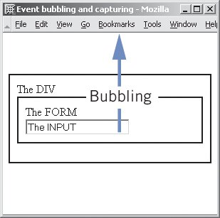

HTML, JavaScript, YUI
<present by="chunghe" email="chunghe@gmail.com" />
- HTML
- JavaScript - DOM
- JavaScript - Event
- YAHOO User Interface
HTML - DocType
<!DOCTYPE HTML PUBLIC '-//W3C//DTD HTML 4.01//EN' 'http://www.w3.org/tr/html4/strict.dtd'>
Available doctypes
A List Apart: Articles: Fix Your Site With the Right DOCTYPE!
HTML - DocType
- Must appear at the very top of every web page
- Using an incomplete or outdated DOCTYPE—or no DOCTYPE at all—throws these same browsers into “Quirks” mode, where the browser assumes you’ve written old-fashioned, invalid markup and code per the depressing industry norms of the late 1990s.
example(without doctype)example(with doctype)
Internet Explorer box model bug - Wikipedia, the free encyclopedia
HTML - DocType

HTML - Differences between XHTML and HTML
- The <html>, <head>, and <body> tags are all required in XHTML.
- All elements must be closed. An opening tag must have either an equal closing tag (if it’s a container tag) or a selfclosing space-plus-slash.
<br /> <br/><br> - All tags must be written in lowercase. (HTML is case insensitive.)
HTML - Differences between XHTML and HTML
- All attribute values must be quoted with either single quotes or double quotes. Thus, class=page is invalid but
class="page"andclass='page'are both fine. - All attributes must have values. Some attributes, such as the selected attribute used with the
<option>tag, could be written in a shortened form in HTML—that is,<option selected>data</option>would be valid. In XHTML, however, you must write<option selected="selected">data</option>. - Ampersands should be encoded. That is, you should write
&instead of just &. This is true wherever the ampersand is: in your content or in a URL.
HTML - Deprecated Tags and alternatives
| HTML tag | Style Property |
|---|---|
| <center> | text-align:center |
| <b> | font-weight:bold |
| <u> | font-style:italic |
| <font> | font-family: font name |
| HTML Attribute | Style Property |
|---|---|
| algin | text-align: center |
| bgcolor | background-color |
| size | font-size: size |
HTML - Well-Formedness
Change Name to Lowercase: Make all element and attribute names lowercase.
<BLOCKQUOTE CITE='http://www.gutenberg.org/dirs/etext00/dvlft10.txt'>
<P>
It was, then, with <EM>considerable</EM> surprise that I
received a telegram from Holmes last Tuesday&MDASH;he has
never been known to write where a telegram would
serve&MDASHin the following terms:
</P>
</BLOCKQUOTE>
It was, then, with considerable surprise that I received a telegram from Holmes last Tuesday—he has never been known to write where a telegram would serve—in the following terms:
HTML - Well-Formedness
Quote Attribute Value
<div id=speech1> <span class=speaker>PROSPERO</span> <blockquote cite=http://www-tech.mit.edu/Shakespeare/tempest.4.1.html> <span class=verse id=a4s1v1>If I have too austerely punish'd you,</span> </blockquote> </div>
PROSPEROIf I have too austerely punish'd you,
HTML - Well-Formedness
Add End-tag: Close all paragraphs, list items, table cells, and other nonempty elements
<ol> <li>Machine-Tools, Wire, Transmission and Textiles <li>Milling Machinery <li>Electrical Apparatus <li>Transportation <li>Importers <li>Synthetic Products based on chemical processes </ol>
<ol> <li>Machine-Tools, Wire, Transmission and Textiles</li> <li>Milling Machinery</li> <li>Electrical Apparatus</li> <li>Transportation</li> <li>Importers</li> <li>Synthetic Products based on chemical processes</li> </ol>
HTML - Well-Formedness
Remove Overlap
This is <strong><em>very important</strong></em>! <p>Sarah answered, <q>I'm really not sure about this.</p> <p>Maybe you should ask somebody else?</q> Then she sat down. </p>
This is <strong><em>very important</em></strong>! <p>Sarah answered, <q>I'm really not sure about this.</q> </p> <p><q>Maybe you should ask somebody else?</q> Then she </p>

HTML - Well-Formedness
Nest Inline Elements inside Block Elements - Give every inline element a block-level parent, and remove all block-level elements from paragraphs.
A p element represents a paragraph. However, unlike other block-level elements, a p may not contain another p or another block element such as blockquote. It can only contain plain text and inline elements. It is in some sense the lowest block-level element.
Do you like this picture?<br /> <img src="file.gif" alt="Goose" width='100' height='100'/> I think it's really <em>neat</em>.<br />
<p>Do you like this picture?</p> <div> <img src="file.gif" alt="Goose" width='100' height='100'/> </div> <p>I think it's really <em>neat</em>.</p>
HTML - Validator
HTML - tables and forms
How to use tables to structurize forms in HTML, and about alternatives, like FIELDSET
- Tables and forms can be nested either way. But if you put forms into tables, each form must be completely included into a single table cell (one TD element in practice). Thereby the forms are each completely independent.
<table> <tr> <td>...</td><td>...</td>... <td> <form action="..."> <input ...> <input ...> </form> </td> </tr> </table>
HTML - tables and forms
<form method="post" action="http://www.cs.tut.fi/cgi-bin/run/~jkorpela/echo.cgi">
<table border="1">
<tr>
<td>your name</td>
<td>
<input type="text" name="name" size="20">
</td>
</tr>
<tr>
<td>your e-mail address</td>
<td><input type="text" name="email" size="25"></td>
</tr>
</table>
<p><input type="submit" value="submit" name="b1"></p>
</form>
- HTML
- JavaScript - DOM
- JavaScript - Event
- YAHOO User Interface
DOM - Document Object Model
<html>
<head> <title>Hacking JavaScript</title> </head>
<body>
<h1>Hello world!</h1>
<p>I am a JavaScript hacker!</p>
</body>
</html>
DOM - Document Object Model
- To the W3C DOM, everything in an HTML document is a node
- <body>, <p>, or even <br />, is an element node
- texts contained in thses elements are text nodes.
- HTML attributes like ID are attribute nodes.
- comments are comment nodes
DOM Levels and Features
Document Object Model (DOM) SpecificationsDOM Level 1
- standardized in October 1998.
- defines the core DOM interfaces, such as Node, Element, Attr, and Document
DOM Level 2
- standarized in November 2000.
- greatly expanded to define standard APIs for working with document events and CSS stylesheets.
getElementById,addEventListener, etc
DOM Level 3
- W3C has released specifications for several Level 3 modules.
DOM Level 0 (Legacy DOM)
- DOM Level 0 does not refer to any formal standard but does informally to the common features of the HTML document object models implemented by Netscape and Internet Exploer prior to W3C standarization.
- Level 0 DOM nodeLists are available only for a limited number of elements, most importantly form fields, images and links
- Level 0 DOM nodeLists allow you to search for an element by name or ID.
options[]allows you to create and remove option elements.
DOM Level 0 (Legacy DOM)
<body> <img src="someImg.gif" name="firstIMG" /> <img src="someOtherImg.gif" id="secondIMG" /> </body>
document.imagesequalsdocument.getElementsByTagName('img')document.images[0]equalsdocument.getElementsByTagName('img')[0]- In addition, the Level 0 DOM allows
document.images['firstIMG']anddocument.images['secondIMG'].
DOM - Finding elements
CSS
Selectors
DOM
Methods
DOM - Finding elements
CSS
#ID{ }
DOM
document.getElementById('ID')
DOM - Finding elements
CSS
#footer{ }
DOM
document.getElementById('footer')
DOM - Finding elements
CSS
tagName{ }
DOM
document.getElementsByTagName('tagName')
DOM - Finding elements
CSS
p{ }
DOM
document.getElementsByTagName('p')
document.bodyrefers to the <body> tagdocument.headrefers to the <head> tagdocument.documentElementrefers to the <html> tag that serves as the root element of the document.
DOM - Finding elements
CSS
#nav a{ }
DOM
document.getElementById('nav').getElementsByTagName('a')
CSS Selector
$$('#nav a')
DOM - Finding elements
CSS
* { }
DOM - Universal Selector
document.getElementsByTagName('*')
DOM - Finding elements
CSS
.className{ }
DOM - Universal Selector
document.getElementsByClassName('className')
now natively supported by the most recent versions of Firefox, Safari, and Opera
DOM - getElementsByClassName
document.getElementsByClassName = function(name) {
var results = new Array();
var elems = document.getElementsByTagName("*");
for (var i=0; i<elems.length; i++) {
if (elems[i].className.indexOf(name) != -1) {
results[results.length] = elems[i];
}
}
return results;
};
... or using YAHOO.util.Dom.getElementsByClassName('name')
<script type="text/javascript">
alert(document.getElementById('foo').id);
</script>
<div id="foo">hello, foo</div>
<div id="foo">hello, foo</div>
<script type="text/javascript">
alert(document.getElementById('foo').id);
</script>
<script type="text/javascript">
window.onload = function(){
alert(document.getElementById('foo').id);
}
</script>
<div id="foo">hello, foo</div>
DOM - creating and appending elements
createElement(), createTextNode(), appendChild(), removeChild()
<body></body>
<script type="text/javascript">
document.onclick = function(){
var p = document.createElement('p');
var text = document.createTextNode('This is dynamic created text');
p.appendChild(text);
document.body.appendChild(p);
}
</script>
Removing all child Nodes
while (x.childNodes[0])
x.removeChild(x.childNodes[0]);
... or using innerHTML
x.innerHTML = '';
DOM - innerHTML
- not a part of W3C DOM specification.
- perfect browser compatibility and supported by all modern browsers.
- usually faster(~35 times), more convenient and compact than describing it as a sequence of calls to
createElement()andappendChild(). - dynamic
document.body.innerHTML += '
foo' document.getElementById('p').style.backgroundColor = 'red'; - mix with DOM
var table = document.createElement('table'); table.innerHTML = '<tr><th>name</th><th>value</th></tr>'; - rewrite the previous example with
innerHTMLdocument.body.innerHTML = '
This is dynamic created text
';
DOM - Changing the document tree
insertBefore(), replaceChild()
first paragraph
second paragraph
third paragraph
<script> var first = document.getElementById('first'); var third = document.getElementById('third'); document.onclick = function(){ first.parentNode.insertBefore(third, first); } &llt;/script>
DOM - Finding elements
parentNode, firstChild, lastChild, previousSibling, nextSibling
DOM - Finding elements
<body>
<p>first exmpale paragraph</p>
<script type="text/javascript">
document.onclick = function(){
console.log(document.body.firstChild);
}
</script>
</body>
output:
Firefox : "\n\n" Internet explorer: "first example paragraph"
DOM - Finding elements
- No empty text Nodes in Explorer: Explorer Windows does not support empty text nodes. This is an excellent idea, but unfortunately all other browsers disagree, and thus incompatibilities are born.
- Living with empty text nodes:
Element type nodeType Element 1 Attribute 2 Text 3 Comment 8 Document 9
DOM - Finding elements
var x = document.getElementsByTagName('p')[0];
x.parentNode.insertBefore(x,x.previousSibling.previousSibling);
The following has a better change to work across the borard
DOM - Finding elements
var x = document.getElementsByTagName('p')[0];
var previousElement = x.previousSibling;
while (previousElement.nodeType == 3)
previousElement = previousElement.previousSibling
x.parentNode.insertBefore(x,x.previousElement);
... or use YAHOO.util.Dom.getPreviousSibling / YAHOO.util.Dom.getNextSibling
DOM - WalkTheDOM & getElementsByClassName
function walkTheDOM(node, func) {
func(node); node = node.firstChild;
while (node) {
walkTheDOM(node, func);
node = node.nextSibling;
}
}
function getElementsByClassName(className) {
var results = [];
walkTheDOM(document.body, function (node) {
var a, c = node.className, i;
if (c) {
a = c.split(' ');
for (i = 0; i < a.length; i += 1) {
if (a[i] === className) { results.push(node); break; }
}
}
});
return results;
}
DOM - Attributes
getAttribute(), setAttribute()
<img src="http://www.quirksmode.org/pix/logo.gif" id="test" />
<script type="text/javascript">
var imgEl = document.getElementById('test');
alert(imgEl.getAttribute('src'));
imgEl.setAttribute('src', 'http://www.quirksmode.org/pix/logo2.gif');
</script>
Before W3C specified the DOM, JavaScript needed a way to access a few important HTML attributes. In order to do this without the as-yet-unspecified getAttribute() method, JavaScript's inventors decided to map certain properties of JavaScript objects to HTML attributes.
imgEl.setAttribute('src', 'http://www.quirksmode.org/pix/logo2.gif');
imgEl.src = 'http://www.quirksmode.org/pix/logo2.gif';
DOM - Inline style modification
<p id="foo">I am foo</p>
<script type="text/javascript">
var foo = document.getElementById('foo');
document.onclick = function(){
foo.style.color = 'red';
}
</script>
Naming Conventions: CSS Attributes in JavaScript
| css attributes | JavaScript |
|---|---|
| font-family | element.style.fontFamily |
| background-color | element.style.backgroundColor |
| float | element.style.cssFloat |
DOM - Inline style modification
<p id="foo">I am foo</p>
<script type="text/javascript">
var foo = document.getElementById('foo');
document.onclick = function(){
if(foo.style.display == 'none')
foo.style.display = '';
else
foo.style.display = 'none';
}
</script>
DOM - Inline style modification
<style> .hide{display:none} </style>
<p id="foo">I am foo</p>
<script type="text/javascript">
var foo = document.getElementById('foo');
document.onclick = function(){
if(foo.className.indexOf('hide') == -1)
foo.className += 'hide';
else
foo.className = foo.className.replace(/hide/g, '');
}
</script>
- HTML
- JavaScript - DOM
- JavaScript - Event
- YAHOO User Interface
supplemental materials
Amazon.com: HTML Mastery: Semantics, Standards, and Styling: Paul Haine: Books
supplemental materials
Amazon.com: ppk on JavaScript, 1/e (VOICES): Peter-Paul Koch: Books
Amazon.com: JavaScript: The Definitive Guide: David Flanagan: Books
supplemental materials
Amazon.com: Pro JavaScript Techniques (Pro): John Resig: Books
Amazon.com: JavaScript: The Good Parts: Douglas Crockford: Books
nodetype and its constant
| Element type | nodeType | constant |
|---|---|---|
| Element | 1 | ELEMENT_NODE |
| Attribute | 2 | ATTRIBUTE_NODE |
| Text | 3 | TEXT_NODE |
| Comment | 8 | COMMENT_NODE |
| Document | 9 | DOCUMENT_NODE |
Also note that they are not supported by Internet Explorer. For compatibilty with IE, you must use numeric literals directly. For example, use 1 instead of Node.ELEMENT_NODE:
JavaScript Random Topic - Encapsulate your code
Encapsulate your code
// global land has access to ONLY a, but cannot execute code within it
function a() {
// has access to a, and b, but cannot execute code within b, c, and d
function b() {
// has access to a, b, and c, but cannot execute code within c, and d
function c() {
// has access to a, b, c, and d but cannot execute code within d
function d() {
// has access to all, and the ability to execute all
}
}
}
}
JavaScript Random Topic - Encapsulate your code
The reason this safeguards your code is that closures give your code a closing scope that does not allow predators (or other messy engineers) to mess with it. A closure establishes a space in which any variables defined within that space are not accessible from outside that space. In fact, it is only functions (changed as of JavaScript 1.7) that can provide block scope and create closures for you.
(function() {
var a = 'foo';
var b = function() {
// do stuff...
};
var c = {
thunk: function() {
},
baz: [false, true, false]
};
})();
JavaScript Random Topic - Timers and Animation
setTimeout(), clearTimeout(), setInterval(), clearInterval()
- The
setTimeout()method of the Window object schedules a function to run after a specified number of milliseconds elapses.setTimeout()returns an opaque value that can be passed to clearTimeou() to cancel the execution of the scheduled function. setInterval()is likesetTimeout()except that the specified function is invoked repeatedly at intervals of the specified number of milliseconds. LikesetTimeout( ),setInterval( )returns an opaque value that can be passed to clearInterval( ) to cancel any future invocations of the scheduled function.
JavaScript Random Topic - Timers and Animation
<script type="text/javascript">
document.onclick = function(){
var timer = setInterval(
function(){
document.body.innerHTML+='foo
'
// this refers to window object
if( typeof this.i == 'undefined')
this.i = 1;
if(this.i == 5){
clearInterval(timer);
document.body.innerHTML += 'timer ' + timer + ' cleared.';
}
this.i++;
}, 1000)
}
</script>
JavaScript Random Topic - Timers and Animation
<style type="text/css">
#p{background-color:#fff; border:1em solid #090; width:100px; text-indent:-5000px}
</style>
<div id="p">.</div>
<script type="text/javascript">
var elem = document.getElementById('p');
elem.style.height = '0px';
// we're going to do a 20 frames animation that takes place over one second
for(var i=0; i<=100; i+=5){
(function(){
var pos = i;
setTimeout(function(){
elem.style.height = (pos/100)*100 + 'px';
}, (pos+1)*10);
})()
}
</script>
Event - the events
Event handling is the most notoriously area of browser incompatibilites.
- Mouse events, caused by a certain mouse action. ex:
mouseover, mouseout, mousedown, mouseup, click, dblclick, mousemove, mouseenter, mouseleave - Keyborard events, caused by a certain key action. ex:
keydown, keypress, keyup
JavaScript Madness: Keyboard Events
- The keydown event occurs when the key is pressed, followed immediately by the keypress event. Then the keyup event is generated when the key is released.
- In theory, the keydown and keyup events represent keys being pressed or released, while the keypress event represents a character being typed. In practice, this is not always the way it is implemented.
Event - the events
- Interface events, which fire when something happens to the page, ex:
blur, focus, change, contextmenu, load, unload, readystatechange, reset, submit, resize, scroll
Event - Event simulation
These methods simulate the occurrence of an event
- Window method
focus(), blur()set or remove the focus on the form field you use them on - The
click()method allows you to simulate a click on a form field. - The
submit()andreset()methods of a form submit or reset the form. Note that when you use thesubmit()method, theonsubmitevent handler of the form will not fire.
Event - Event-handler registration
Event Handlers as Attributes: violate the sparation of structure and behavior
<a href="somewhere.html" onclick="highlightNavItem()">
Event - Event-handler registration
The traditional model:
var x = document.getElementById('somewhere');
x.onclick = highlightNavItem;
// note: no parentheses, the () operator executes a function
pros: easy to use and works in all browsers
cons: overwrites the earlier value
x.onclick = doThis; x.onclick = doThat;
If you want to execute both functions when user clicks on the element
x.onclick = function(){
doThis();
doThat();
}
Event - Event-handler registration
function addLoadEvent(func) {
var oldonload = window.onload;
if (typeof window.onload != 'function') {
window.onload = func;
} else {
window.onload = function() {
if (oldonload) {
oldonload();
}
func();
}
}
}
addLoadEvent(fn1);
addLoadEvent(fn2);
...
Event - Event-handler registration
Both W3C and Microsoft have defined event-handler registration models that allow you to define as many event handlers as you like.
- W3C model
target.addEventListener(type, listener, useCapture);
x.addEventListener('click', doThis, false); x.addEventListener('click', doThat, false);
Event - Event-handler registration
- Microsoft model
bSuccess = object.attachEvent(sEvent, fpNotify)
x.attachEvent('onclick',doThis); x.attachEvent('onclick',doThat);note: the event name as a string, with the on
Event - Event-handler registration
function addEventHandler(node, type, f) {
if (node.addEventListener) {
node.addEventListener(type, f, false);
} else if (node.attachEvent) {
node.attachEvent("on" + type, f);
} else {
node["on" + type] = f;
}
}
Using capability detection - Opera Developer Community
Event - Removing event handlers
Traditional model:
x.onclick = null;
W3C & Microsoft Model
x.removeEventListener('click',doThis,false); // W3C
x.detachEvent('onclick',doThis); // Microsoft
... or using YAHOO.util.Event.removeListener
Event - Removing event handlers
remove all event listeners before removing a nodeMemory Leaks
function purge(d) {
var a = d.attributes, i, l, n;
if (a) {
l = a.length;
for (i = 0; i < l; i += 1) {
n = a[i].name;
if (typeof d[n] === 'function') { d[n] = null; }
}
}
a = d.childNodes;
if (a) {
l = a.length;
for (i = 0; i < l; i += 1) { purge(d.childNodes[i]); }
}
}
... or using YAHOO.util.Event.purgeElement
Event - Bubbling and Capturing
div, form, and input all have an onclick event handler. The user clicks on the input Obviously, the event handler of the form field should now fire. But what about the <div>'s and the <form>'s event handlers? Should they fire too?
Event - Bubbling and Capturing
Event bubbling. The events fire in the order form field, form, div

d.addEventListener('click', function(){alert(this.id)}, false);
p.addEventListener('click', function(){alert(this.id)}, false);
link.addEventListener('click', function(){alert(this.id)}, false);
Event - Bubbling and Capturing
Event capturing. The events fire in the order div, form, form field.
d.addEventListener('click', function(){alert(this.id)}, true);
p.addEventListener('click', function(){alert(this.id)}, true);
link.addEventListener('click', function(){alert(this.id)}, true);
Event - Bubbling and Capturing
In the W3C event model, event capturing takes place first, followed by event bubbling.
d.addEventListener('click', function(){console.log(this)}, true);
p.addEventListener('click', function(){console.log(this)}, true);
link.addEventListener('click', function(){console.log(this)}, true);
d.addEventListener('click', function(){console.log(this)}, false);
p.addEventListener('click', function(){console.log(this)}, false);
link.addEventListener('click', function(){console.log(this)}, false);
Event - Event Delegation
Seven JavaScript Techniques You Should Be Using Today - Four: Try Event DelegationEvent delegation is a simple way to cut back on event attachment. It works by adding a listener to a container element, and then retrieving the target that fired the event, rather than attaching several listeners to the children and accessing the element object through the this object.
<ul id="example">
<li>foo</li>
<li>bar</li>
<li>baz</li>
<li>thunk</li>
</ul>
var element = document.getElementById('example');
addListener(element, 'click', handleClick);
function handleClick(e) {
var element = e.target || e.srcElement;
// do stuff with 'element'
}
Event - Event object
- In the W3C model, the event object is sent to the event-handling function as the first argument.
- In the Microsoft model, the event object is always window.event.
document.onclick = function(e){
var e = e || window.event;
console.dir(e);
}
document.onkepress = function(e){
var e = e || window.event;
console.dir(e);
}
Event - Event properties
- Targeting: The W3C properties are
currentTarget, relatedTarget, target, the Microsoft properties arefromElement, toElement, srcElement - Mouse position
keyCodeorcharCodecontains the code of the pressed key.
document.onkeypress = function(e){
if(!e) e = window.event;
var code = e.keyCode || e.charCode;
alert(code);
//alert(String.fromCharCode(code));
}
altKey, ctrlKey, and shiftKey properties are true when user press the Alt, Control, or Shift key, false when he doesn't.Event - targeting
- event object's
targetorsrcElementproperty, which always refers to the element on which the event took place. thiskeyword, which usually (but not always) refers to the element on which you have defined the event handler.
<ul>
<li>banana</li>
<li>tomato</li>
<li>orange</li>
</ul>
<script>
document.onclick = function(e){
if(!e) e = window.event;
var target = e.target||e.srcElement;
alert(target.innerHTML + ' clicked');
target.style.backgroundColor = '#eee';
}
</script>
Event - cancelling default action
The W3C and Microsoft models also define ways to cancel the default action.
- W3C model:
preventDefault(); - Microsoft model: set the event object's
returnValueproperty to false. - traditional model:
return false
var link = document.getElementById('link');
link.onclick = function(e){
if(!e) e = window.event;
// W3C model
if(e.preventDefault)
e.preventDefault();
// microsoft Model
e.returnValue = false;
// traditional model
return false;
}
Event - cancelling event propagation
"This event should not propagate further"
- W3C model:
stopPropagation() - Microsoft model: set the event object's
cancelBubbleproperty totrue - traditional model: N/A
function stopBubble(e) {
// If an event object is provided, then this is a non-IE browser
if ( e && e.stopPropagation )
// and therefore it supports the W3C stopPropagation() method
e.stopPropagation();
else
// Otherwise, we need to use the Internet Explorer
// way of cancelling event bubbling
window.event.cancelBubble = true;
}}}}
YAHOO.util.Evet.stopEvent = YAHOO.util.Event.stopPrpagation + YAHOO.util.Event.preventDefault
作業時間到，我們一起來禱告
tab module- event targeting - find which tab is clicked
- class toggling - remove class and add class
- inline style modification - display:none and display:''
requirement
- no library
- work both in IE/firefox
- HTML
- JavaScript - DOM
- JavaScript - Event
- YAHOO User Interface
YUI - YAHOO User Interface Introduction
YUI - YAHOO User Interface Introduction
CSS: reset.css / base.css / fonts.css / grids.css
JS: divided into two logical sections: utilities and controls
- Utilities are reusable infrastructure librariies that handle things like events, Ajax calls, animation and drag and drop.
- Controls are reusable interactive components - things like sliders, menus and calendars.
YAHOO.util.Dom
<script src="http://yui.yahooapis.com/2.5.2/build/yahoo/yahoo-min.js"></script> <script src="http://yui.yahooapis.com/2.5.2/build/dom/dom-min.js"></script>
yui's own abstraction for
document.getElementByIdYAHOO.util.Dom.get(element or string or array)alias
var YUD = YAHOO.util.Dom, $ = YUD.get; alert( $('foo').innerHTML );
YAHOO.util.Dom.batch
Runs the supplied method against each item in the Collection/Array. The method is called with the element(s) as the first argument.
Example
var lis = document.getElementsByTagName('li');
document.onclick = function(){
YAHOO.util.Dom.batch(lis, function(el){
el.style.backgroundColor = '#eee';
})
}
YUD.getXY / YUD.setXY
YUD.getXY: Gets the curent position of an element based on page coordinates. display:none or elements not appended return false.YUD.setXY: Set the positio of an html element in page coordinates, reagrdless of how the element is positioned. display:none or elements not appended return false
var YUD = YAHOO.util.Dom,
$ = YAHOO.util.Dom.get;
var p = $('p');
var xy = YUD.getXY('p');
console.log(xy);
p.onmouseover = function(){
YUD.setXY('tooltip', [xy[0]+30, xy[1]-30]);
}
p.onmouseout = function(){
YUD.setXY('tooltip', [-5000, -5000]);
}
YUD.getElementsByClassName, YUD.getElementsBy
YAHOO.util.Dom.getElementsBy(function(el) {
return (/^http:\/\/www\.yahoo\.com/.test(el.getAttribute('href')));
}));
Both getElementsByClassName and getelementsBy by deafult traverse every element in the DOm. This can lead poor performance, so the function take optional 2nd and 3rd arguments for specifying the tpyoe of elements to be checked and the root node to start checking from. Here's how you run the above query only against link elements within a div of ID content.
YAHOO.util.Dom.getElementsBy(function(el) {
return (/^http:\/\/www\.yahoo\.com/.test(el.getAttribute('href')));
}, 'a', 'content'));
YUD - adding, removing and replaceing classes
- YUD.hasClass(el, className);
- YUD.addClass(el, className);
- YUD.removeClass(el, className);
- YUD.replaceClass(el, className);
YAHOO.util.Event
<script type="text/javascript" src="http://yui.yahooapis.com/2.5.2/build/yahoo/yahoo-min.js" ></script> <script type="text/javascript" src="http://yui.yahooapis.com/2.5.2/build/event/event-min.js" ></script>
aggregated yahoo-dom-event.js
<script type="text/javascript" src="http://yui.yahooapis.com/2.5.2/build/yahoo-dom-event/yahoo-dom-event.js"></script>
basic usage of the event library looks like this:
function myCallback(e){
alert('something was clicked'):
}
YAHOO.util.Event.addListener(el, 'click', myCallback);
combine the above using anonymous function
YAHOO.util.Event.addListener(el, 'click', function(e){
alert('something was clicked');
})
YAHOO.util.Event
YAHOO.util.Event.on is an alias for addListener. You can also pass the ID of the element
YAHOO.util.Event.on('mylink', 'click', function(e){
alert('Element was clicked!')'
})
You can also pass the array of Id of the element
YAHOO.util.Event.on(['mylink1', 'mylink2', 'mylink3'], 'click', function(e){
alert('Element was clicked!')'
})
You can pass an object as the third argument. It will be passed to your event handling function when it is called.
function msgAlert(e, msg){
alert(msg);
}
YAHOO.util.Event.on('mydiv', 'click', msgAlert, "My div was clicked");
YAHOO.util.Event - delayed listener
- you can't add an event handler to an element until that element has been loaded into the DOM.
- The standard solution is to have event handlers added in a piece of code that is itself called when the window.onload event fires.
- If a page takes a while to load, UI elements won't respond as they should until the load has completed
The event component lets you assign event handlers by ID before the element is available
Example
<script type="text/javascript">
var myCallback = function(){alert('mydiv clicked')};
YAHOO.util.Event.on('mydiv', 'click', myCallback);
</script>
<div id="mydiv">foo</div>
YUE.onDOMReady vs. window.onload
Example
var YUE = YAHOO.util.Event;
YUE.on(window, 'load', function(){
document.body.innerHTML += 'window.onload fired
';
})
YUE.onDOMReady(function(){
document.body.innerHTML += 'onDOMReady fired
';
})
http://l.yimg.com/wretch.yimg.com/photos/serv/index2/js/index.js
init: function(){
YUE.onDOMReady( this.initTab );
YUE.onDOMReady( this.initTKR );
YUE.onDOMReady( this.ddMenu );
YUE.onDOMReady( this.setLang );
YUE.onDOMReady( this.showIframe );
if(YAHOO.env.ua.ie) YUE.onDOMReady( this.setHomepage );
}
YUE.onAvailable, YUE.onContentReady, YUE.onDOMReady
onAvailabletargets a single element and fires when that element is availalbe (when it responds to document.getElementById()) - but you can't count on the element's children having been loaded at this point.onContentReady: When you care about not just your target element but it's children as well, use onContentReady. This method will tell you that your target element and all of its children are present in the DOM.onDOMReadywill let you know that the DOM is fully loaded and ready for you to modify via script.
YAHOO.util.Event
The event library provides a number of utility functions for cross-browser event manipulation:
- YAHOO.util.Event.getCharCode(ev)
- YAHOO.util.Event.getPageX(ev)
- YAHOO.util.Event.getPageY(ev)
- YAHOO.util.Event.getXY(ev)
- YAHOO.util.Event.getTarget(ev)
- YAHOO.util.Event.getRelatedTarget(ev)
- YAHOO.util.Event.stopPropagation(ev)
- YAHOO.util.Event.preventDefault(ev)
- YAHOO.util.Event.stopEvent(ev)
Connection Manager - YAHOO.util.Connect
<script src="http://yui.yahooapis.com/2.5.2/build/yahoo/yahoo-min.js"></script> <script src="http://yui.yahooapis.com/2.5.2/build/event/event-min.js"></script> <script src="http://yui.yahooapis.com/2.5.2/build/connection/connection-min.js"></script>
- The connection manager is a utility that enables you to make in-page HTTP requests through a simplified interface to the XMLHttpRequest object.
- The Connection Manager handles cross-browser instantiation of XMLHttpRequest, negotiates the server response and uses a callback pattern to process the response data.
Connection Manager - YAHOO.util.Connect
Example
YAHOO.util.Connect.asyncRequest('GET', 'hello-world.htm', {
success: function(o) {
console.dir(o);
document.body.innerHTML += o.responseText;
},
failure: function(o) {
alert('Request failed: ' + o.statusText);
}
});
Connection Manager - YAHOO.util.Connect
available properties for response o
Connection Manager - YAHOO.util.Connect
cross-domain AJAX scripting - proxy.php
$id = $_GET['id'];
$str = file_get_contents("http://www.flickr.com/photos/" . $id );
echo $str;
Example
var go = document.getElementById('go');
go.onclick = function(){
var id = document.getElementById('user').value;
YAHOO.util.Connect.asyncRequest('GET', 'proxy.php?id='+id, {
success: function(o) {
console.dir(o);
document.body.innerHTML += o.responseText;
},
failure: function(o) {
alert('Request failed: ' + o.statusText);
}
});
}
GET - YAHOO.util.Get.script
cross-site data retrieval
Example (http://kitty.2y.idv.tw/~chfang/cross-site-data.js)
var address = {
'wretch': 'http://www.wretch.cc',
'yahoo' : 'http://tw.yahoo.com',
'flickr': 'http://www.flickr.com'
}
Example
document.onclick = function(){
var script = document.createElement('script');
script.src = 'http://kitty.2y.idv.tw/~chfang/cross-site-data.js';
document.documentElement.appendChild(script);
var init = function(){
for(add in address){
document.documentElement.innerHTML += 'GET - YAHOO.util.Get.script
...but the onload event does not fire in IE http://www.flickr.com/services/rest/?method=flickr.people.getPublicPhotos&format=json
var jsonFlickrApi = function(o){
console.dir(o);
}
var init = function(){
if(typeof script != 'undefined')
return;
var script = document.createElement('script');
script.src = 'http://www.flickr.com/services/rest/?method=flickr.people.getPublicPhotos&format=json&api_key=f075c2b2f74fe6dbec7760d425c2f75a&user_id=79211125@N00';
document.documentElement.appendChild(script);
}
document.onclick = init;
GET - YAHOO.util.Get.script
rewrite previous example with YUI Get
var jsonFlickrApi = function(o){
console.dir(o);
}
var init = function(){
YAHOO.util.Get.script('http://www.flickr.com/services/rest/?method=flickr.people.getPublicPhotos&format=json&api_key=f075c2b2f74fe6dbec7760d425c2f75a&user_id=79211125@N00');
}
document.onclick = init;
http://www.wretch.cc/svcs/findfriend/group.php?tab=relate
YAHOO.wretch.group.getScript = function(e, p){
if(typeof YAHOO.wretch.group.setHiddenValue == 'function')
YAHOO.wretch.group.setHiddenValue();
var formstr = setForm('searchform');
YAHOO.util.Get.script( $('searchform').action + "?pg="+p+"&"+formstr);
}
Animation - YAHOO.util.Anim
animate an element to resize itself to 400 by 400 pixels over a one second period
var anim = new YAHOO.util.Anim(el, {
width: {to: 400},
height: {to: 400}
}, 1);
anim.animate();
Let's have it fade in at the same time;
var anim = new YAHOO.util.Anim(el, {
opacity: {from: 0, to: 1}
width: {to: 400},
height: {to: 400}
}, 1);
Default units are pixels, but you can use other units as well
var anim = new YAHOO.util.Anim(el, {
width: {from: 1, to: 10, unit: 'em'}
}, 1);
Animation - YAHOO.util.Anim
Since animations take time to complete, the ability to subscribe to custom events is supported. vailable events are onStart, onComplete and onTween (which fires for every frame).
var anim = new YAHOO.util.Anim(el, {
opacity: {to: 0}
} 1, YAHOO.util.Easing.easeOut);
anim.onComplete.subscribe(function() {
var el = this.getEl();
el.parentNode.removeChild(el);
});
anim.animate();
As the animation progresses, an animation manager object keeps track of how much time has elapsed. If performance is poor, the framerate is dynamically reduced to ensure that everything completes in the time specified.
Animation - YAHOO.util.Anim
Example- YAHOO.util.Easing.easeIn - begin slowly and accelerate
- YAHOO.util.Easing.easeOut - begin quickly and decellerate
- YAHOO.util.Easing.easeBoth - both
- YAHOO.util.Easing.easeNone - the default; uniform speed
- YAHOO.util.Easing.backIn - start below starting value
- YAHOO.util.Easing.backOut - end with bounce beyond ending value
- YAHOO.util.Easing.backBoth - both
YAHOO Global Object
http://yuiblog.com/blog/2007/06/12/module-pattern/1. Create a namespace object:
YAHOO.namespace("myProject");
2. Assign the return value of an anonymous function to your namespace object:
YAHOO.myProject.myModule = function () {
return {
myPublicProperty: "I'm accessible as YAHOO.myProject.myModule.myPublicProperty.";
myPublicMethod: function () {
YAHOO.log("I'm accessible as YAHOO.myProject.myModule.myPublicMethod.");
}
};
}(); // the parens here cause the anonymous function to execute and return
YAHOO Global Object - JavaScript Pattern Module
3. Add "private" methods and variables in the anonymous function prior to the return statement.
YAHOO.myProject.myModule = function () {
//"private" variables:
var myPrivateVar = "I can be accessed only from within YAHOO.myProject.myModule.";
//"private" method:
var myPrivateMethod = function () { YAHOO.log("I can be accessed only from within YAHOO.myProject.myModule"); }
return {
myPublicProperty: "I'm accessible as YAHOO.myProject.myModule.myPublicProperty."
myPublicMethod: function () {
YAHOO.log("I'm accessible as YAHOO.myProject.myModule.myPublicMethod.");
//Within myProject, I can access "private" vars and methods:
YAHOO.log(myPrivateVar);
YAHOO.log(myPrivateMethod());
//The native scope of myPublicMethod is myProject; we can
//access public members using "this":
YAHOO.log(this.myPublicProperty);
}
};
}(); // the parens here cause the anonymous function to execute and return
YAHOO Global Object - JavaScript Pattern Module
Example
YAHOO.namespace("myProject");
YAHOO.myProject.myModule = function () {
//private method:
var getListItems = function () {
//note that we can use other private variables here, including
//our "yud" shorthand to YAHOO.util.Dom:
var elList = yud.get("myList");
var aListItems = yud.getElementsByClassName(
"draggable", //get only items with css class "draggable"
"li", //only return list items
elList //restrict search to children of this element
);
return aListItems;
};
//the returned object here will become YAHOO.myProject.myModule:
return {
aDragObjects: [], //a publicly accessible place to store our DD objects
init: function () {
//we'll defer making list items draggable until the DOM is fully loaded:
yue.onDOMReady(this.makeLIsDraggable, this, true);
},
makeLIsDraggable: function () {
var aListItems = getListItems(); //these are the elements we'll make draggable
for (var i=0, j=aListItems.length; i<j; i++) {
this.aDragObjects.push(new YAHOO.util.DD(aListItems[i]));
}
}
};
}(); // the parens here cause the anonymous function to execute and return
//The above code has already executed, so we can access the init
//method immediately:
YAHOO.myProject.myModule.init();